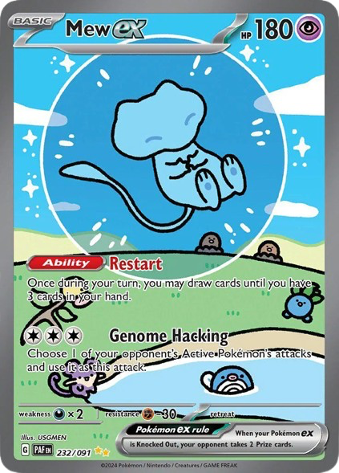
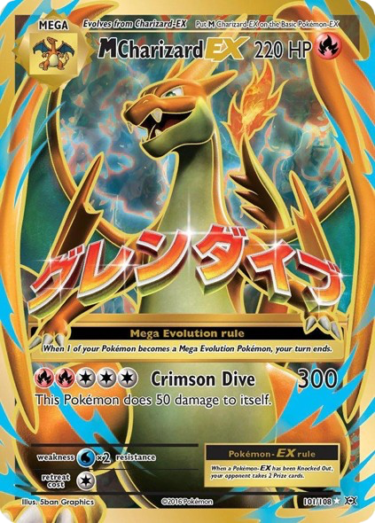

Pokémon als hobby
Het is een hobby die ik al een lange tijd heb. Ik heb toen ik jong was veel de Pokémon games gespeeld op oude Nintendo consoles en spaar al heel lang Pokémon kaarten. Ik ruilde vroeger ook veel met vrienden en met klasgenoten op het schoolplein. Mijn broertje, zus en vader hebben ook een flinke collectie aan Pokémon kaarten.

Pokémon kaarten

Ik vind het leuk om Pokémon kaarten te verzamelen door de unieke illustraties, het ruilen met andere mensen, de nostalgie die de kaarten met zich meebrengen en de verhalen die achter sommige kaarten zitten. Iedere kaart is uniek :D Veel kaarten hebben hele mooie artwork en een eigen stijl, die vaak te koppelen zijn aan andere kaarten van dezelfde tekenaar.




Hoofdstuk 3
To be continued